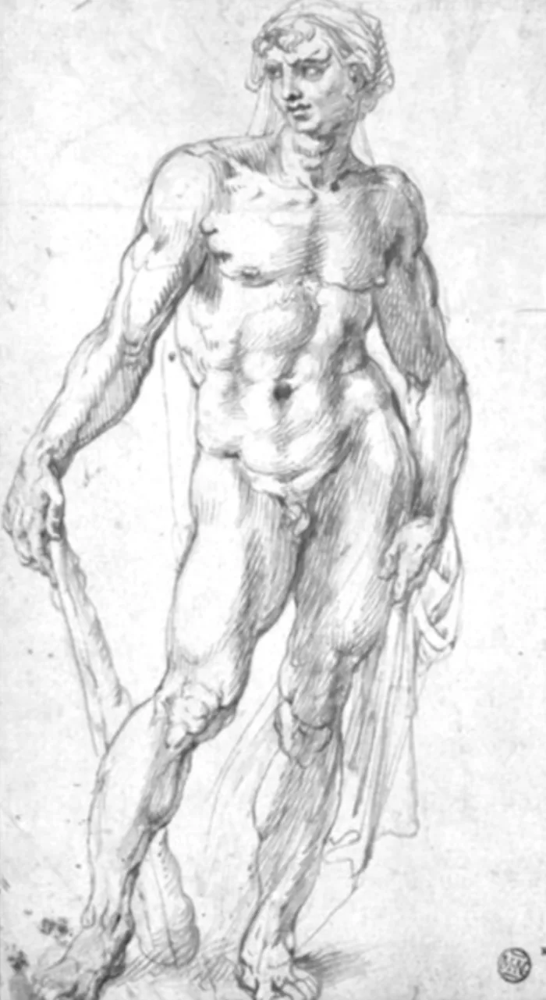

上一周，我们就《最小阻力之路》展开了详尽的探讨，看见了实现目标的最小阻力之路，前提条件是我们要设定愿景并如实地看见现实，这样愿景和现实之间就会产生结构性张力，驱使你走向愿景。
但是，这并没有那么简单。
以下两种情况会导致结构性张力无法形成：
- 如果你设定的愿景并不是你自己真实渴望、想要的，而是其他人灌输给你的，或者你觉得符合社会标准、是自己"应该"需要的那种，那么结构性张力几乎不可能形成。
- 如果你不能如实地看见自己的现实，对自己的现实情况有任何偏差，那么结构性张力也不会形成。
所以，今天以及这一周，我们想要去探讨和研究：如何设定自己真正渴望的愿景？也就是去设定那些真实且有效、能够形成"最小阻力之路"并产生结构性张力的愿景。
由此我找到了一本非常适合说愿景的书，《10x is easier than 2x》（10倍目标比2倍目标更容易）。
《10x》这本书花了很大篇幅呈现：为什么 10 倍的目标（愿景）比 2 倍的目标更好。它提供了一个极其聚焦的设定愿景的原则和方向。
先引用书中的"米开朗琪罗"的例子，去意会，一个人是如何利用10倍目标从而成为大师的。后续我们会聊更多具体细节。
先剧透：10倍并不是让你做得更多，更努力，而是让你做得更少。
The Michelangelo Story10倍增长与你被告知的常规做法正好相反
"毛毛虫视为世界末日的东西，大师却称之为蝴蝶。"—— 理查德·巴赫
17岁时，米开朗琪罗痴迷于秘密获取和解剖人类尸体。
1493年，在意大利的佛罗伦萨，"侵犯尸体"是一种可被判处死刑的罪行。
"要是有人愿意冒险呢？要怎么做呢？在贫民墓地寻找埋葬地点吗？"他询问了一位年长的朋友马尔西利奥·菲奇诺，后者的父亲是一位著名的医生。菲奇诺简直无法相信自己听到的一切。
"我亲爱的年轻朋友，你不能把自己想象成一个盗墓者。"
但米开朗琪罗已经绝望了。
的确，如果别无他法，他甚至会劫掠坟墓来获取尸体。
学习解剖学对他的目标至关重要。
他刚刚开始创作他的第一个真人大小的三维雕塑：一个九英尺高的大力神。
由于赞助人兼导师的突然离世，米开朗琪罗决定通过这个项目来纪念洛伦佐·迪·皮耶罗·德·美第奇。
在尝试创作这个大力神像之前，他制作过许多较小的雕塑。但这些都不是三维作品，而且他也从未因此获得过报酬。这是他第一个以专业态度着手的大型项目。他不再以新手或业余爱好者的方式思考和创作了。
他说服了佛罗伦萨大教堂的工头，卖给他一块存放在大教堂庭院里的旧大理石。他动用了前两年在美第奇宫工作积攒的大部分积蓄——五个金币——来购买这块大理石。
洛伦佐去世后，米开朗琪罗被迫回到家中，与贫穷的父亲一起生活。父亲不赞成儿子成为艺术家，反而希望他能从事商业事业。
为了获得父亲的认可，他对自己的项目撒了谎，称自己受委托创作雕塑，且委托人已购好大理石。他还谎称在项目进行期间每月能获得一笔报酬。这是个冒险的谎言——如果项目失败，米开朗琪罗很可能不得不遵从父亲的意愿，放弃自己的梦想。
在为大教堂工作室安排好工作地点后，米开朗琪罗开始用蜂蜡制作大力神像。但他很快意识到，自己缺乏塑造出真实人类形象所需的技术能力。
"如果我不知道自己在做什么，又怎能勾勒出一个形象，哪怕是最粗略的轮廓呢？除了塑造表面的皮肤、外在的曲线、骨骼的轮廓以及几块肌肉的形态，我还能做成什么呢？我所了解的不过是表面现象而已。人的生命结构隐藏在表面之下，我的眼睛无法看见，我又怎知是什么从内部塑造出我从外部所看到的形态呢？"
他认定，唯有直接研究身体的构造与功能，无论是外部还是内部，才能将人的形象描绘和雕刻得充满生命力。
他到哪里去找尸体呢？
富人的尸体都埋在家族坟墓里——他根本拿不到。
中产阶级的死者被宗教仪式包围，这是行不通的。
在佛罗伦萨，哪些死者无人照料、无人问津？唯有穷人、孤儿和乞丐。他们生病时会被送进医院，尤其是那些提供免费床位的教会医院。
米开朗琪罗若想完成这个雄心勃勃的计划，就必须再冒一次大风险。的确，如果被抓到摆弄尸体的话，至少也会被关进监狱。最坏的情况是他可能被判处死刑。
位于佛罗伦萨的慈善医院圣灵教堂宣称拥有最大的免费招待所。米开朗琪罗开始偷偷摸摸地在圣灵教堂周围寻找死者的安置处。最终他找到了停尸房，尸体们被保存在那里，等待下葬。他选择在深夜潜入停尸房，天亮前再离开。当蜡烛的光芒开始摇曳时，米开朗琪罗就知道负责每天烤面包的僧侣们马上就要来了。
在接下来的几个月里，他通过解剖数十具尸体自学人体解剖学。他专注于研究细节：肌肉如何收缩、静脉如何跳动、肌腱如何伸展。他仔细观察并切割了每一个器官。渐渐地，他习惯了尸体的气味。他感到好奇，为什么人们如此不同，但他们的大脑却有着如此相似的结构和功能。
回到家里，他把学到的东西画了下来。解剖学成为米开朗琪罗最重要的学科和专长。引用他未来的一个学生的话：
"通过解剖，米开朗琪罗研究了每一种已知的动物，并进行了大量的人体解剖，其数量远远超过该领域的专业人士。这一成就对他解剖学造诣的提升产生了巨大影响，是其他画家无法比拟的……他所研究的人体解剖案例之多，就连那些以解剖为职业的人也难以企及他的知识深度。"
米开朗琪罗掌握了所需技巧并树立了信心，最终完成了他笔下的大力神像。在构思和规划设计方案的过程中，他反复绘制草图，力求准确把握赫拉克勒斯的姿态与情感表现。
米开朗琪罗没有像典型英雄那样塑造出双腿和双臂展开、呈伸展姿态的形象，而是创作了一个紧凑闭合的人物形象，更符合希腊式的审美观念。凭借他的解剖学知识，他将赫拉克勒斯的力量表现为躯干与四肢相互结合的力量。赫拉克勒斯仅穿着一小块腰部皮衣，赤裸着上身，强壮的身体倚靠在巨大的木制棍棒上。

米开朗基罗制作了一个粗糙的粘土模型，不断调整重量和姿态，以找到最佳效果。凭借对质量和张力关系的理解，他刻画出因手臂伸展而导致的背部肌肉弯曲。随着身体倾斜，筋腱不断伸缩，韧带承受着压力，而臀部和肩膀则进行着旋转运动。
艺术家能够如此自信而精准地呈现这一切，是因为他精通人体解剖学。
他用一根扁平的棍子来测量切割的深度，以便达到颈部的深度、腋窝的深度、躯干的倾斜度以及弯曲的膝盖的位置。他紧贴着表面进行凿刻，宛如犁田般的操作。当凿子穿透塞拉韦扎大理石风化的外层后，他发现内部质地如同柔软的沙子，乳白色的碎屑在他指间散落。随着切割深度的增加，大理石迅速变得坚硬如铁，他不得不竭尽全力才能塑造出理想的形状。
他差点毁掉自己那块大理石。他切得太深，无法将"脖子"部分雕刻出来，此刻他强有力的凿子在肩膀肌肉处产生的震动令人不安。如果大理石在狭窄处裂开，赫拉克勒斯就会失去他的头颅。
幸运的是，头部没有破裂。
为了让大力神的每一毫米都达到他理想的精细程度，米开朗琪罗精心打造了几件刀刃锋利的工具。每一次敲击都能使力量均匀传递，仿佛是他的手指而非凿子在切割水晶。每隔一会儿，他会退后一步，绕着大理石转圈，清除新落的灰尘。他先从远处审视作品，再眯起眼睛仔细观察细节。
他还犯了其他几个错误，比如几次击打都把大力神的前部削掉了。但他在后面留下了足够的备用大理石，使整个人物嵌入大理石块的深度超出了原计划。
他的进度加快了。大理石的轮廓逐渐与他的粘土模型相吻合：雄伟的胸部、肌肉发达的前臂，以及如树干般粗壮的大腿。
他小心翼翼却又充满热情地雕刻着，用手钻凿出鼻孔和耳朵的形状。他用最锋利的凿子将颧骨打磨得圆润光滑，同时以极其轻柔的手法转动双手，让眼睛呈现出清晰而锐利的神态。
随着项目接近尾声，他工作时间越来越长，顾不上吃饭，最终筋疲力尽地倒在床上。
一旦完成，赫拉克勒斯的消息就传开了。
米开朗琪罗得到了斯特罗齐一家100弗罗林金币的出价，这对于一个普通的佛罗伦萨人来说是一大笔钱，斯特罗齐一家想把它放在他们的宫殿庭院里。
当大力士雕像完成后，那是1494年的春天，米开朗琪罗19岁。
为了将赫拉克勒斯塑造成他心目中的完美形象，米开朗基罗在人体解剖学方面达到了其他任何雕塑家都无法企及的精通程度。面对看似不可能完成的任务，他不断犯错，但始终保持专注与决心，勇于承担风险，最终创作出了令人惊叹的杰作。
米开朗基罗并非天生就是伟大的艺术家。他是通过不断践行我所说的"10倍法则"才成为伟大艺术家，并最终达到传奇级别的。
他着手要做的事情远远超越了他以往的所有成就，同时也突破了所在领域既定的标准与常规。要在理想水平上完成这个项目，不仅需要他在技能与创造力上的提升，更需要他在决心、信念乃至自我认知方面的彻底转变。
他甚至不得不冒巨大风险，才敢尝试他的10倍项目。
他被要求学习并掌握独特的知识与技巧，比如人体解剖学的复杂结构，以及如何创作出与真人大小相当且逼真的人体雕像。
完成并售出大力神雕像后，他已与17年前开始这项事业的自己判若两人。
卖掉大力神之后，他在精神上和情感上都发生了巨大变化，拥有了更强的技能和更高的自信。而在职业方面，他的地位也与从前截然不同。他现在因完成了有意义的作品而声名鹊起，这不仅让人们对他本人更感兴趣，也使得更多人希望委托他创作作品。
米开朗琪罗是如何取得如此不可能的突破的？
Psychological Flexibility心理灵活性：能够以符合个人标准的方式成功应对各种障碍的能力
在心理学中，有一个日益重要的概念——心理灵活性。它被定义为能够以符合个人标准的方式成功应对各种障碍的能力。本质上来说，心理灵活性意味着即便面临情感上的挑战，也要继续朝着既定目标前进。你需要承认并接纳自己的情绪，但绝不能让情绪左右自己。
心理上变得更加灵活，能让你在情感上得到成长与进步，即便面对困难也能过上更加真诚和谐的生活。
这是如何运作的？
心理灵活性的一个核心方面是将自己视为一个背景，而不是将自己视为内容。这样就不会过度认同自己的想法和情绪，因为自我并非由思想与情感构成。相反，自己是思想和情感的背景，当背景发生变化时，内容也随之改变。
当你把自己看作一个背景，而不是内容时，你会更加灵活和适应性强。正如可以更换家具或改造房屋一样，你也能自我拓展与重塑。通过将自身视为一个背景——这一过程需要大量的情感成长——你便能应对更复杂的挑战与机遇，而不至于不堪重负。你可以保持谦逊的同时充满决心，不断开拓通往更令人振奋的目标的新道路。
米开朗琪罗极具灵活性。他不断构想更为宏伟、深刻的愿景，并在情感、技能及能力方面持续进化，以求实现那些看似不可能的目标。如此一来，他的自由与能动性得以提升——他的自我本质和生活方式都得到了根本性的改善。他每实现一次这样的"飞跃"，这种进步就会持续一生。
米开朗琪罗并没有止步于赫拉克勒斯。
凭借新的信心与技艺，他开启了又一次"10倍飞跃"——首先雕刻了一个小丘比特雕像，该雕像很快被罗马红衣主教拉斐尔·里亚里奥以200弗罗林的价格购得。里亚里奥被这件作品深深打动，便邀请米开朗琪罗搬进自己的宫殿，全职为他工作。
1496年6月25日，21岁的米开朗基罗离开了他成长并度过了整个一生的佛罗伦萨，来到了罗马。他很快找到了一块巨大的大理石，于是开始着手实施他迄今为止最雄心勃勃的艺术项目。八九个月后的1497年春天，这位艺术家终于完成了这座雕像——雕像的尺寸与真人相当，描绘的是罗马的酒神巴克斯，他手中握着葡萄藤，还有一个小羊人正在从背后吃那些葡萄。
银行家雅格布·加利住在里阿里奥红衣主教的街对面，他与米开朗琪罗成为朋友，并为自己的庭院购买了巴克斯雕像。1497年11月，加利帮助米开朗琪罗获得了为圣彼得大教堂雕刻一尊圣母怜子像的委托。
这尊描绘圣母玛丽为耶稣遗体哀伤的《圣母怜子图》耗时两年才完成。米开朗琪罗渴望让这件作品臻于完美，他将自己的创造力与雕刻技艺提升到了不可思议的高度。
与当时其他众多圣母怜子图不同，他希望以玛丽而非耶稣作为核心人物。米开朗琪罗将玛丽描绘成年轻貌美的处女母亲，而非30多岁的中年妇人。她抱着已逝的救世主儿子悲痛不已。基督那几乎完全裸露的美丽身躯，彰显了米开朗琪罗在人体解剖学方面深厚的造诣。
《圣母怜子图》的完成标志着米开朗琪罗又一次实现十倍飞跃的巅峰时刻。
24岁时重返佛罗伦萨的他，已不再是三年前离开故乡时的那个自己。他在国外生活，结识了许多有影响力的人物，还完成了两件极具代表性的作品——《巴克斯》和《圣母怜子图》。时至今日，《圣母怜子图》仍被公认为有史以来最伟大的艺术杰作之一。
米开朗琪罗在完成《圣母怜子图》后的技艺、创造力与自信，远远超越了他创作《大力神》时的水平。将这两座雕像相提并论简直是一种亵渎——它们在质量、深度和影响力上截然不同。这就好比用快餐来比喻美食，或者更确切地说，是用普通美食来与史上最精湛的佳肴相媲美。
1501年初，米开朗琪罗开启了他的下一次"10倍飞跃"。
在为锡耶纳大教堂创作的15尊雕像项目中，他已经完成了4尊。这时他得知，佛罗伦萨大教堂工程办公室的监督员们正在寻找一位雕塑家来完成他们那座巨型的大卫雕像。
这块17英尺高的大理石一直放置在佛罗伦萨大教堂的庭院里，残缺不全，暴露在地中海的烈日下长达40多年。几十年前，它被两位不同的雕塑家遗弃并损毁。
米开朗琪罗最渴望的莫过于这个项目。
他将这视为一个巨大的机会——一个能带来十倍回报的机会。
他相信自己能够为大卫像创造出非凡的作品。时年26岁的米开朗基罗让那些工匠们相信，自己才是能够完成大卫像雕刻工作的艺术家。
与他那个时代的许多其他大卫雕塑不同——包括多纳泰罗的作品——米开朗琪罗选择不描绘大卫战胜歌利亚头颅的场景。他也摒弃了将大卫刻画成小巧纤弱的女性化形象的传统表现方式。米开朗琪罗参考了《撒母耳记》中关于大卫与扫罗王的记载：年轻的大卫说服扫罗，自己有能力对抗巨人歌利亚。读到大卫擒杀狮子和熊的故事后，米开朗琪罗认定大卫是完美的人选。
米开朗琪罗没有描绘大卫战胜巨人之后的场景，而是选择了他在勇敢迎战前的时刻。左手搭在肩上握着投石器，右手垂在身侧持着石头，大卫的脸上既带着忧虑，又彰显着决心。
近三年来，米开朗琪罗一直在研究《大卫》。
大卫彻底改变了米开朗琪罗。
1504年初，《大卫》完成之际，便立刻被公认为杰作。当时米开朗琪罗仅29岁。
米开朗琪罗为这尊大卫雕像获得了400弗罗林的报酬，这是他此前所得报酬中最高的一笔。当时最有影响力的艺术家和政治家们组成理事会，决定将大卫像安置在佛罗伦萨的市政厅——韦基奥宫的前面。大卫成了佛罗伦萨独立与自由的象征。这一举措无疑成为了整个城市的转折点，它重新激发了佛罗伦萨人的勇气与自豪感，让民众和整个城市都迎来了繁荣昌盛的时代。
随着大卫像的完成，米开朗琪罗的名声与列奥纳多达芬奇齐名。他的能力进一步提升10倍，因而得到了各国政府和领导人的委托。
1505年，当米开朗琪罗正在创作《卡西纳战役》这幅画时——该画后来与列奥纳多达芬奇的《安吉亚里战役》一同被陈列在韦基奥宫的理事会会议厅中——他不得不放弃这项创作。新当选的教皇尤利乌斯二世委托米开朗基罗建造教皇的坟墓。
你绝不能拒绝教皇。
米开朗琪罗搬到罗马开始工作。
三年后，即1508年，教皇请他绘制西斯廷教堂壁画，他于1512年37岁时完成了这幅作品。
米开朗琪罗一生都在接手那些远远超出——根本不可能超出——他技术水平的项目。大多数人都不愿全身心投入"10倍效率"法则的实施过程，因为这必然意味着要放弃现有的身份、环境与舒适区。
"10倍法则"意味着你要按照自己所能想象的最美好、最令人兴奋的未来来生活。这个10倍级的未来将成为你处理一切事务的标准，而你现在的大部分生活状态都不符合这一标准。
把你带到这里的东西不会把你带到那里。
引用演员列奥纳多迪卡普里奥的话，"你生活的每一个新阶段都需要一个不同的你。"
今日开喷指引卡
打开录音，可以试着说：
1、这事儿别人都不知道，你还想要吗？
挑一个你现在惦记的愿望或目标。问自己：要是没人看见、没人会因为这个高看你一眼，你还乐意要吗？要是心里咯噔一下、犹豫了，那它可能不是你真想要的，是别人塞给你的。说说你卡在哪儿了。
2、别想"多一倍"，想"完全不一样"
米开朗琪罗想的不是"雕快点"，是"雕出没人见过的东西"——光靠多练不够，他得先弄清楚人皮肤底下长什么样，于是干了件违法的事：半夜偷偷解剖尸体。这不是"更努力"，是他换了条完全不同的路才够得着。
拿你刚才那个愿望试试：别想"我更努力一点能不能做到"，想："如果这件事要变大十倍，我现在这套方法还够用吗？我得变成什么样的人，才够得着？"不用管做不做得到，先说出来看看。
现状是：还没有喷。
开录之后，不用暂停，说够15分钟，沉默、语气词也算。
说完可以来群里分享：「Day 8 ✅ + 你那个"十倍版"的愿望，长成了什么样子」。
—— 云不见 · 2026.07.14